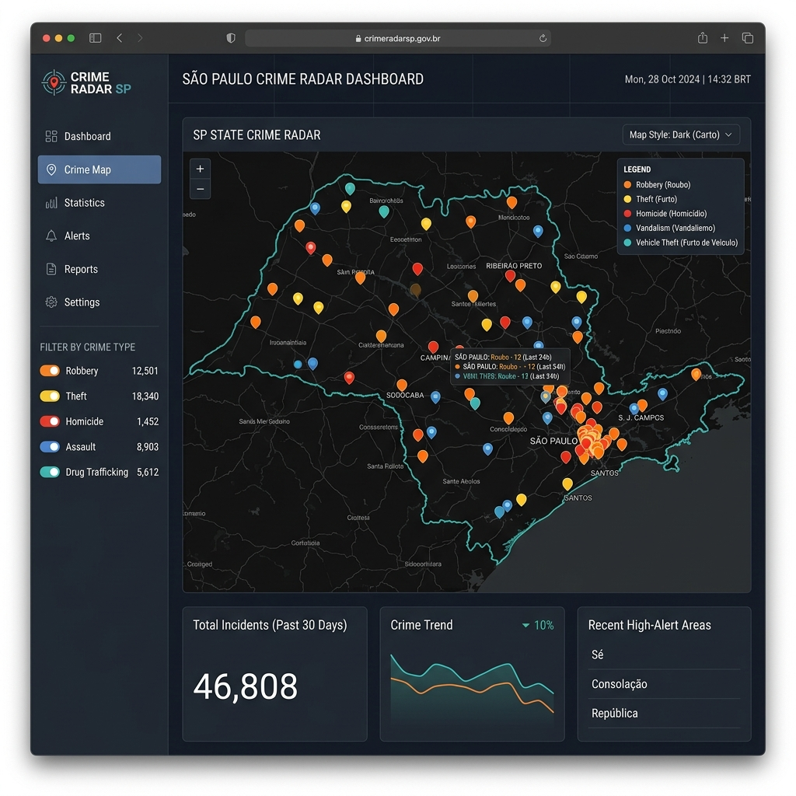

01
Radar da Criminalidade de SP
Dashboard interativo que visualiza dados reais de criminalidade do Estado de São Paulo (Registros de 2025), classificados por tipo de crime em um mapa que permite navegação por cidades.
Arquitetura
Aplicação web construída com Streamlit, utilizando um pipeline de dados que processa bases públicas de segurança do Estado de SP. Os dados são limpos, categorizados e georreferenciados para exibição em um mapa interativo com camadas por tipo de crime.
Detalhes Técnicos
Os dados são processados com Pandas para limpeza e agrupamento. A visualização usa Folium para renderizar o mapa com marcadores categorizados por cores. Filtros dinâmicos permitem selecionar cidades e tipos de crime em tempo real.